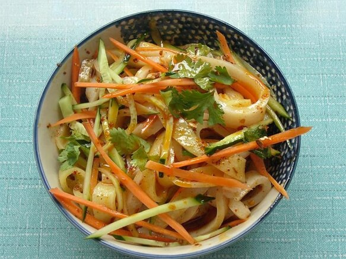

都说“来宁夏不吃大武口凉皮，就算是白来了”。享有“舌尖上的诱惑”美誉的大武口凉皮，离不开黄金土地孕育出的精良食材和严谨的制作工艺。大武口凉皮只选当年的银北小麦粉为原料，用武当泉水和面，从揉面、洗面到锅蒸都独具特色，制出的皮子筋、薄、细、滑。再将石磨碾压成的头茬羊角辣椒粉投入滚烫的葵花油和胡麻油中，炸制成浓香四溢的辣椒油。最后调入慢火细煨的醇香鸡汤，佐以黄瓜丝、豆芽，黄绿相间，堪称绝配，令食客吃上一口便终身难忘！
大武口凉皮美名远扬，还少不了五湖四海大武口人的传承。漂泊在外的游子，回家头等大事就是吃上一碗地道的大武口凉皮，临走时还要带上几份。在大武口人的心里，凉皮不仅是美食，更是浓得化不开的乡愁！不管是70后80后还是90后，对大武口凉皮情有独钟，甚至有游子把玫瑰换做凉皮去求婚的！
东武楼作为大武口凉皮的佼佼者，是宁夏唯一通过QS食品安全认证的凉皮品牌，开创了大武口凉皮的众多第一：第一个把店铺开到淘宝店的企业，第一个把大武口凉皮带出国门，远销至日本、英国、澳大利亚的企业，全国第一家加入食品追溯体系的企业，大武口凉皮标准的制定者，大武口凉皮鉴别真伪的推广企业……
无论天涯海角，总有家乡的味道。大武口凉皮，一份质朴的美味，一份沉甸甸的情怀，一个亘古不变的信仰，让幸福的味道常伴您左右！